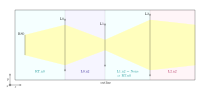
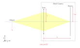

4.2. Base Geometries (Element, Group, Raytracer)#
4.2.1. Elements#
In optrace the class Element denotes an object which has no, one or two surfaces and belongs to the tracing geometry.
This includes the classes
4.2.1.1. Types#
Tracing Elements
Elements with direct ray interaction.
An element with a light emitting surface |
|
An element with two surfaces on which light is refracted. |
|
Like a Lens, except that it has a planar surface and refracts light without aberration |
|
Element with a surface on which wavelength-dependent or wavelength-independent filtering takes place. |
|
Like a filter, except that incident light is completely absorbed. |
Rendering Elements
Elements with no ray interaction for tracing, but the possibility to render images of intersecting rays.
Element with one surface on which images can be rendered |
Markers
Elements for 3D annotation.
element consisting of a point and a label, useful for annotating things. |
|
element consisting of a line and a label, useful for annotating things. |
Volumes
Objects for plotting volumes in the TraceGUI, for instance an enclosing cylinder or medium outline.
Volume of a box or cube |
|
Cylinder volume with symmetry axis in diretion of the optical axis |
|
spheric volume |
4.2.1.2. Usage#
These subclasses have the same methods as the Element superclass, these include:
Functionality |
Example |
|---|---|
move the element: |
|
rotate |
|
flip around the x-axis: |
|
getting the extent (bounding box): |
|
determine the position: |
|
plot the geometry |
(internal functions) |
4.2.2. Group#
A Group can be seen as a list or container of several elements.
It contains the following functionality:
Functionality |
Example |
|---|---|
Adding and removing one or more elements: |
G.add(obj)G.remove(obj) |
Emptying all elements: |
|
check if an element is included: |
|
move all elements at once: |
|
rotate or flip all elements: |
G.rotate(-12)G.flip() |
create ray transfer matrix of the whole lens system: |
|
A Group object stores all elements in their own class lists:
lenses, ray_sources, detectors, markers, filters, apertures.
Where IdealLens and Lens are included in the same list.
When adding objects, the order of objects remains the same.
Thus lenses[2] denotes the lens that was added third (since counting starts at 0).
In principle it is recommended to add objects in the order in which the light passes through them.
Example
The following example creates a Group consisting of an IdealLens and an Aperture.
IL = ot.IdealLens(r=6, D=-20, pos=[0, 0, 10])
F = ot.Aperture(ot.RingSurface(ri=0.5, r=10), pos=[0, 0, 30])
G = ot.Group([IL, F])
Next, we flip the group, reversing the z-order of the elements and flipping each element around its x-axis through the center. Since all elements are rotationally symmetric, this has only a effect on the order of them. After flipping we move the group to a new position. This position is the new position for the first element (which after flipping is the Filter), whereas all relative distances to all other elements are kept equal.
G.flip()
G.move_to([0, 1, 0])
The filter is the first element and has the same position as we moved the group to.
>>> G.apertures[0].pos
array([0., 1., 0.])
The lens has the same relative distance of \(\Delta z = 20\) mm relative to the Filter, but in a different absolute position and now behind the filter.
>>> G.lenses[0].pos
array([ 0., 1., 20.])
4.2.3. Raytracer#
The Raytracer class provides the functionality for tracing, geometry checking, rendering spectra and images, and focusing.
Since the Raytracer is a subclass of a Group, elements can be changed or added in the same way.

Fig. 4.1 Example of a raytracer geometry in the TraceGUI in side view#
Outline
All objects and rays can only exist in a three-dimensional box, the outline.
When initializing the Raytracer this is passed as outline parameter.
This is also the only mandatory parameter of this class
RT = ot.Raytracer(outline=[-2, 2, -3, 3, -5, 60])
Geometry
Since optrace implements sequential raytracing, the surfaces and objects must be in a well-defined and unique sequence. This applies to all elements with interactions of light: Lens, IdealLens, Filter, Aperture, RaySource.
The elements Detector, LineMarker, PointMarker are excluded from this.
All RaySource elements must lie before all lenses, filters and apertures. And all subsequent lenses, filters, apertures must not collide and be inside the outline.
Surrounding Media
Earlier we learned that when creating a lens, you can use the n2 parameter to define the subsequent media. In the case of multiple lenses, the n2 of the previous lens is the medium before the next lens.
In the case of the raytracer, we can define an n0 which defines the refractive index for all undefined n2=None as well as for the region to the first lens.
{kind=link}

Fig. 4.2 Schematic figure of a setup with a ray source, three different lenses and three different ambient media#
absorb_missing
The absorb_missing parameter, which is set to True by default, ensures that light which does not hit a lens is absorbed. In principle, this is the typical and desired case. However, there are geometries where absorb_missing=False could be useful.
A special case is when a ray does not hit a lens where a transition from surrounding media takes place. Here the rays are absorbed in any case, because the exact transition geometry is defined only at the lens itself.
no_pol
The raytracer provides the functionality to trace polarization directions. Thus, not only the polarization vector for the ray and ray segment can be calculated, but also the exact transmission at each surface transition. Unfortunately, the calculation is comparatively computationally intensive.
With the parameter no_pol=True no polarizations are calculated and we assume unpolarized/uniformly polarized light at each transmission. Typically this speeds up the tracing by 10-30%.
Whether you can neglect the influence of polarization depends of course on the exact setup of the geometry.
However, for setups where the angles of the beams to surface normals are small, this is usually the case.
Example
Below you can find an example. A eye preset is loaded and flipped around the x-axis. A point source is added at the retina and the geometry is traced.
import optrace as ot
# init raytracer
RT = ot.Raytracer(outline=[-10, 10, -10, 10, -10, 60])
# load eye preset
eye = ot.presets.geometry.arizona_eye(pupil=3)
# flip, move and add it to the tracer
eye.flip()
eye.move_to([0, 0, 0])
RT.add(eye)
# create and add divergent point source
point = ot.Point()
RS = ot.RaySource(point, spectrum=ot.presets.light_spectrum.d50, divergence="Isotropic", div_angle=5,
pos=[0, 0, 0])
RT.add(RS)
# trace
RT.trace(100000)
4.2.4. Loading ZEMAX Geometries (.zmx)#
It is possible to load .zmx geometries into optrace. For instance, the following example load some geometry from file setup.zmx into the raytracer.
RT = ot.Raytracer(outline=[-20, 20, -20, 20, -20, 200])
RS = ot.RaySource(ot.CircularSurface(r=0.05), spectrum=ot.presets.light_spectrum.d65, pos=[0, 0, -10])
RT.add(RS)
n_schott = ot.load.agf("schott.agf")
G = ot.load.zmx("setup.zmx", n_dict=n_schott)
RT.add(G)
RT.trace(10000)
For the materials to be loaded correctly all mentioned names in the .zmx file need to be included in the n_dict dictionary.
You can either load them from a .agf catalogue like in Section 4.6.5 or create the dictionary manually.
A list of exemplary .zmx files can be found in the following repository.
Unfortunately, the support is only experimental, as there is no actual documentation on the file format. Additionally, only a subset of all ZEMAX functionality is supported, including:
SEQ-mode onlyUNITmust beMMonly
STANDARDorEVENASPHsurfaces, this is equivalent toRingSurface, CircularSurface, SphericalSurface, ConicSurface, AsphericSurfaceinoptraceno support for coatings
temperature or absorption behavior of the material is neglected
only loads lens and aperture geometries, no support for additional objects
Information on the file format can be found here, here and here.
4.2.5. Geometry Presets#
4.2.5.1. Ideal Camera#
In cases of a virtual image, an additional lens or lens system is needed to create a real image. Real lens systems come with aberrations and falsify the virtual image by adding additional errors.
For this application an ideal camera preset is included, that provides aberration-free imaging towards a detector.
The preset is loaded with ot.presets.geometry.ideal_camera and returns a Group object consisting of a lens and a detector.
Required parameters are the object position z_g as well as the camera position (the position of the lens) cam_pos, as well as the image distance b, which in this case is just the difference distance between lens and detector.
G = ot.presets.geometry.ideal_camera(cam_pos=[1, -2.5, 12.3], z_g=-56.06, b=10)
In many cases the additional lens diameter parameter r and detector radius r_det need to be provided:
G = ot.presets.geometry.ideal_camera(cam_pos=[1, -2.5, 12.3], z_g=-56.06, b=10, r=5, r_det=8)
The function also supports an infinite position of z_g = -np.inf.
When given a desired object magnification \(m\), the image distance parameter \(b\) can be calculated with:
Which should be known from the fundamentals of optics.
Where \(g\) is the object distance, in our example z_g - cam_pos[2].
Note that \(b, g\) both need to be positive for this preset.
{kind=link}

Fig. 4.3 Visualization of the ideal_camera parameters.#
4.2.5.2. LeGrand Paraxial Eye Model#
The LeGrand full theoretical eye model is a simple model consisting of only spherical surfaces and wavelength-independent refractive indices. It models the paraxial behavior of a far-adapted eye.
Surface |
Radius in mm |
Conic Constant |
Refraction Index to next surface |
Thickness (mm) (to next surface) |
|---|---|---|---|---|
Cornea Anterior |
7.80 |
0 |
1.3771 |
0.5500 |
Cornea Posterior |
6.50 |
0 |
1.3374 |
3.0500 |
Lens Anterior |
10.20 |
0 |
1.4200 |
4.0000 |
Lens Posterior |
-6.00 |
0 |
1.3360 |
16.5966 |
Retina |
-13.40 |
0 |
- |
- |
The preset legrand_eye is located in ot.presets.geometry and is called as function. It returns a Group object that can be added to a Raytracer. Provide a pos parameter to position it at an other position than [0, 0, 0].
RT = ot.Raytracer(outline=[-10, 10, -10, 10, -10, 60])
eye_model = ot.presets.geometry.legrand_eye(pos=[0.3, 0.7, 1.2])
RT.add(eye_model)
Optional parameters include a pupil diameter and a detector (retina) radius, both provided in millimeters.
eye_model = ot.presets.geometry.legrand_eye(pupil=3, r_det=10, pos=[0.3, 0.7, 1.2])
4.2.5.3. Arizona Eye Model#
A more advanced model is the arizona_eye model, which tries to match clinical levels of aberration and for different adaption levels. It consists of conic surfaces, dispersive media and adaptation dependent parameters.
Surface |
Radius in mm |
Conic Constant |
Refraction Index to next surface |
Abbe Number |
Thickness (mm) (to next surface) |
|---|---|---|---|---|---|
Cornea Anterior |
7.80 |
-0.25 |
1.377 |
57.1 |
0.55 |
Cornea Posterior |
6.50 |
-0.25 |
1.337 |
61.3 |
\(t_\text{aq}\) |
Lens Anterior |
\(R_\text{ant}\) |
\(K_\text{ant}\) |
\(n_\text{lens}\) |
51.9 |
\(t_\text{lens}\) |
Lens Posterior |
\(R_\text{post}\) |
\(K_\text{post}\) |
1.336 |
61.1 |
16.713 |
Retina |
-13.40 |
0 |
- |
- |
- |
With an accommodation level \(A\) in dpt the missing parameters are calculated using: [1]
Accessing and adding works like for the legrand_eye preset.
RT = ot.Raytracer(outline=[-10, 10, -10, 10, -10, 60])
eye_model = ot.presets.geometry.arizona_eye(pos=[0.3, 0.7, 1.2])
RT.add(eye_model)
As for the legrand_eye we have the parameters pupil and r_det. Additionally there is a adaptation parameter specified in diopters, which defaults to 0 dpt.
eye_model = ot.presets.geometry.arizona_eye(adaptation=1, pupil=3, r_det=10, pos=[0.3, 0.7, 1.2])

Fig. 4.4 Eye model in the arizona_eye_model.py example script.#
References